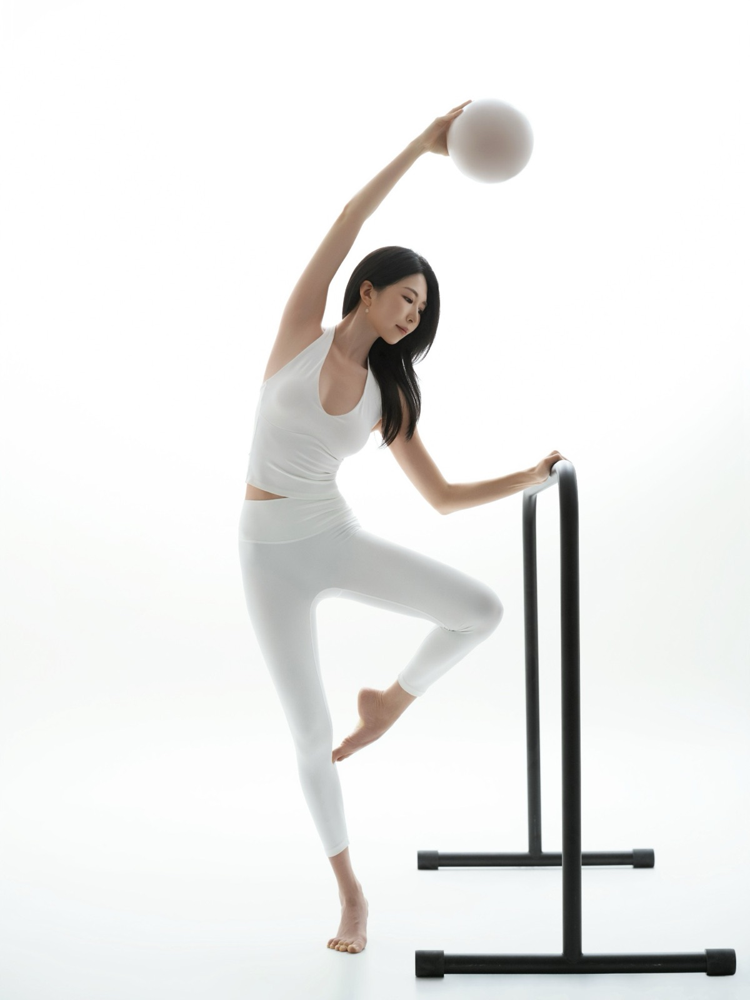

Story
Wait, You Teach Wellness Now?
The story of how I gave up a steady paycheck to become a wellness instructor.
Move to Find Yourself.
소밍랩 · 정다솜 Soaming
I used to believe I had to be good at things to be worth something. Through movement, I found I was already enough, with nothing to prove. Every SOAMING LAB class starts from there.
No need to prove anything. You are enough as you are.
Instead of filling what’s missing, find what you already have.
Live as yourself, and welcome each other just as we are.
Through movement and writing, find yourself.
Movement was what helped me get to know myself. I got curious about all kinds of training, and there were days I worked out three times, sometimes eight hours in total. What I felt then was that movement let me breathe. Focusing on the sensations in my body gave me energy, and movement became my way of getting to know myself. Searching for myself through it, I realized that the person who thought she had nothing actually had energy, drive, and momentum. That strength let me try so many things, and those experiences are what help me take on new challenges today.
As I discovered what I had, one thing at a time, the words I had been holding on to started to make sense.
“For we are his workmanship, created in Christ Jesus unto good works, which God hath before ordained that we should walk in them.” (Ephesians 2:10)
I read this as: even without achieving anything, we were already made with intention. So I believe the reason we exist isn’t something we earn by proving ourselves. It’s something we discover we already have.
But it took time to make those words my own. I held myself to a high standard. My ideals were strict, so I saw my shortcomings before I could say anything kind to myself. “Why did I do that?” “Am I strange, or special, or just too sensitive?” I couldn’t look at myself as generously as I looked at others, and the bigger my ideals grew, the longer I hurt in the gap between them and reality. When people told me “you have to love yourself before you can love others,” it took me a long time to really hear it.
I think getting closer to loving yourself means finding more ways to understand yourself. Once I understood, “I was fighting so hard just to be myself in that place,” I felt compassion for myself and could finally hold the child I used to be. That only came after facing myself, fully and painfully, through a lot of questioning. After leaving my job, at a prayer retreat, I realized for the first time that I was enough just as I am, without needing any reason.
Because knowing and understanding myself was this hard for me, I came to believe that people who want to understand and find themselves need a chance to discover their own potential, too. After more than ten years of all kinds of training, I’ve learned this: workouts come and go with trends, but what we really want from movement is to understand ourselves and come to love ourselves more.
That’s why movement and writing are my tools for understanding myself. Today, as a movement instructor, I help people focus on the sensations in their own bodies instead of comparing themselves to others. I’ve run programs that combine the two, like noticing your emotions and year-end reflection, and in every class I want to make room for people to discover themselves and grow into self-understanding and self-love. I want people to find what they already have, tune in to their bodies, and experience being enough just as they are. Most of all, I want to be with people like the old me, who believe they have to be good to be accepted and have no room left to care for their body and mind. Next, I want to use AI to build a wellness habit program, something you carry into everyday life rather than try once and forget.
The community I dream of is a place where, through my bright energy and good influence, people discover themselves and live as who they are. A place where, through movement and writing, our differences are accepted as they are and we share healthy energy. SOAMING LAB is where I started building it. What I want to create isn’t a place where you strive to prove something, but a place where you experience that being yourself is enough.
Move to Find Yourself.

I did ballet for six years as a kid, and in high school in the States I was on the cheer team and ran sprints for track. Since then I’ve been lifting for ten years and tried just about everything else: Pilates, soccer, group training like F45, boxing, swimming, rowing. Then I found barre, got certified, and now I teach it.
Most of my classes are in English, but I teach in Korean too. And class doesn’t stop at barre. After we move, we take time to write and check in with how we’re really feeling.
I’ve worked in marketing, community building, education, sales, and business development at an international foundation, startups, and large companies. Now I bring that experience into designing classes with brands and companies.
Every class follows the same flow: move, write, and discover yourself. I’ve handled everything from the pitch and sponsorships to recruiting and teaching, alongside brands and communities.
At Egattoc Library, a wellness space in Jeju, we wake the body up with barre, then take time to look back on the thoughts and feelings that carried us through the year.
Before barre, we check in with how we feel, in body and mind. After class, we notice what’s changed. I pitched the class to AYWA, a yoga studio in Pangyo, then planned and ran it together with Conch and Crycheeseburger.
A barre class in English for internationals living in Korea, followed by dinner and some mingling. It was right before Chuseok, so for a lot of people far from home, it was a nice way to make new friends.
A small group of eight. With so few people, I could work with everyone on their form, so even total beginners felt comfortable.
A mat Pilates class over Spatial and Zoom, with everyone joining from their living room. A little experiment in working out together, wherever you are.
Twenty-four women met every week for six months for sculpt and mat Pilates. Working out is hard to stick with on your own. Together, it became a habit.
First, I listen: who it’s for and what you need. Then I design the program around that.
Barre for people who spend their days at a desk. I’ve worked in an office myself, so I know that kind of tired, and I build classes that fit real workdays. All you need is a meeting room with chairs. After we get moving, we can add a team-building or stress-management session. Afterward, I send a wrap-up report on how participants responded.
Wellness programs for residents, international residents, and staff. I start by getting to know your organization and community, then plan around the people taking part.
One-day classes and wellness events. I handle planning, brand partnerships, sign-ups, and the day itself, so your brand shows up in a way that feels natural.
One-day classes for individuals, taught in English and Korean. First-timers are always welcome.
Pick what fits your goals.
The story of how I gave up a steady paycheck to become a wellness instructor.
Let’s create time where being yourself is enough.
From classes to brand collaborations and community programs, share your idea, even if you’re still figuring out the details.
Can’t see the form? Open it in a new tab
soaminglab@gmail.com